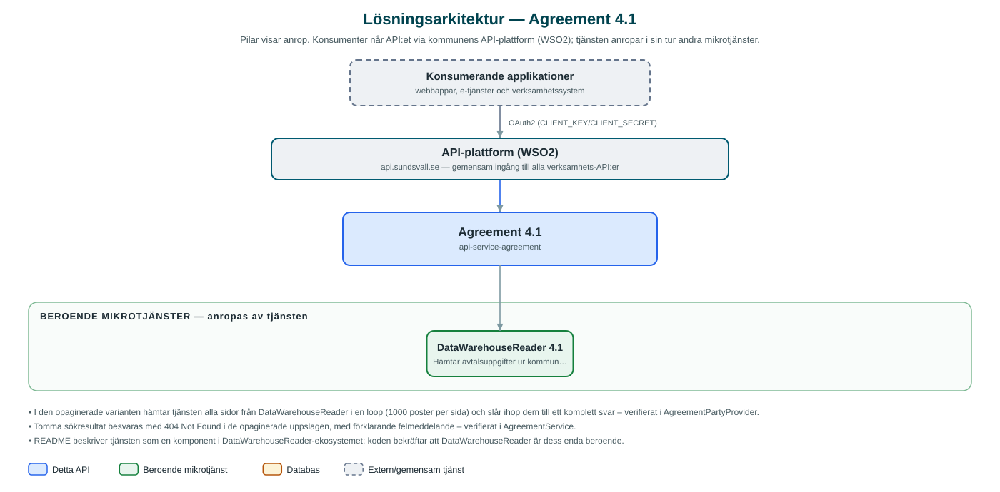

Agreement
Uppslag av en parts avtal med kommunkoncernens leverantörsbolag – el, fjärrvärme, vatten, avfall med mera – kopplade till anläggningar.
Om API:et
Agreement svarar på vilka avtal en invånare eller ett företag har med leverantörsbolagen inom kommunkoncernen, till exempel elnät, elhandel, fjärrvärme och fjärrkyla, vatten, avfallshantering och bredband. Avtalen är knutna till anläggningar, och uppgifterna hämtas ur kommunens datalager via tjänsten DataWarehouseReader.
API:et kan slås upp från två håll: alla avtal för en part (partyId), eventuellt avgränsat till vissa kategorier, eller alla avtal knutna till en viss anläggning inom en kategori. Sökningen kan begränsas till enbart aktiva avtal, och det finns både en variant som returnerar allt i ett svar och en paginerad variant.
Tjänsten lagrar ingenting själv utan är ett läsande fasad-API framför datalagret, med kommunens API-plattform som enda väg in.
Det här gör API:et
- Avtal per part – Hämtar samtliga avtal för en part uppslaget på partyId, med möjlighet att avgränsa till vissa kategorier.
- Avtal per anläggning – Hämtar avtal knutna till en viss anläggning inom en kategori, till exempel alla elavtal för en anläggning.
- Sju avtalskategorier – Bredband, fjärrkyla, fjärrvärme, elnät, elhandel, avfallshantering och vatten.
- Endast aktiva avtal – Sökningen kan begränsas till avtal som är aktiva vid anropstillfället.
- Paginerat svar – En paginerad variant av partsuppslaget för stora avtalsmängder.
API-dokumentation
API:ets samtliga resurser, parametrar och datamodeller finns beskrivna i en OpenAPI-specifikation som är hämtad ur källkodsförrådet. Den kan utforskas interaktivt i Swagger UI eller laddas ner som YAML.
Teknisk dokumentation
Nedan beskrivs hur tjänsten är uppbyggd, vilka andra tjänster den anropar och vad som krävs för att driftsätta den. Informationen är härledd ur källkoden och dess konfiguration på GitHub.
Arkitektur

API:et är en mikrotjänst (Java 25, Spring Boot via kommunens gemensamma tjänsteplattform dept44 (8.0.8), byggd med Maven). Konsumenter når tjänsten via kommunens gemensamma API-plattform (WSO2) på api.sundsvall.se – tjänsten anropas aldrig direkt. Tjänsten anropar i sin tur andra mikrotjänster i kommunens tjänstelandskap.
Teknikstack
- Språk: Java 25
- Ramverk: Spring Boot via kommunens gemensamma tjänsteplattform dept44 (8.0.8), byggd med Maven
- Övrigt: Resilience4j-circuit breaker mot DataWarehouseReader
Beroenden till andra mikrotjänster
Tjänsten anropar följande mikrotjänster. Versionerna är hämtade ur källkodens integrationsklienter.
| Tjänst | Version | Användning |
|---|---|---|
| DataWarehouseReader | 4.1 | Hämtar avtalsuppgifter ur kommunens datalager, per part eller per anläggning. |
Konfiguration och driftsättning
- application.yml med URL och OAuth2-klientuppgifter för DataWarehouseReader
- Timeout-inställningar för anropen mot DataWarehouseReader
- Ingen databas att konfigurera – tjänsten är helt läsande
- Anrop görs per kommun – municipalityId ingår i alla API-vägar
Noterbart ur källkoden
- I den opaginerade varianten hämtar tjänsten alla sidor från DataWarehouseReader i en loop (1000 poster per sida) och slår ihop dem till ett komplett svar – verifierat i AgreementPartyProvider.
- Tomma sökresultat besvaras med 404 Not Found i de opaginerade uppslagen, med förklarande felmeddelande – verifierat i AgreementService.
- README beskriver tjänsten som en komponent i DataWarehouseReader-ekosystemet; koden bekräftar att DataWarehouseReader är dess enda beroende.
Källkod
Källkoden är öppen och finns hos Sundsvalls kommun på GitHub. I källkodsförrådet finns även instruktioner för att klona, konfigurera och starta tjänsten i egen miljö.